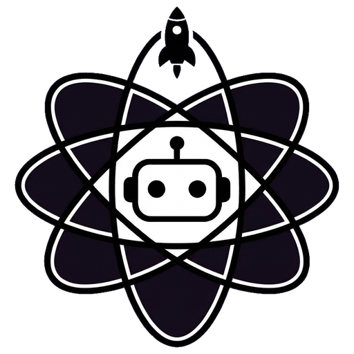

CYBBIG
Défense locale
Démarrage du service local sécurisé…
127.0.0.1 uniquement
Les données restent sur ce poste. Les analyses sont passives ou statiques : aucun exploit, aucune exécution du code analysé, aucune télémétrie.